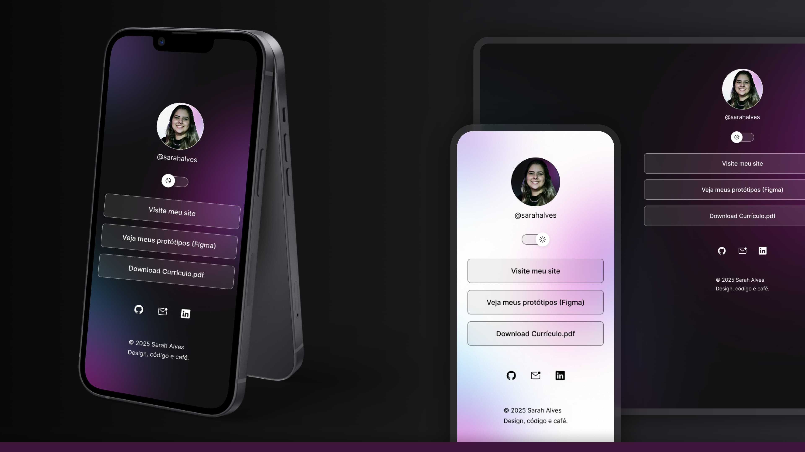
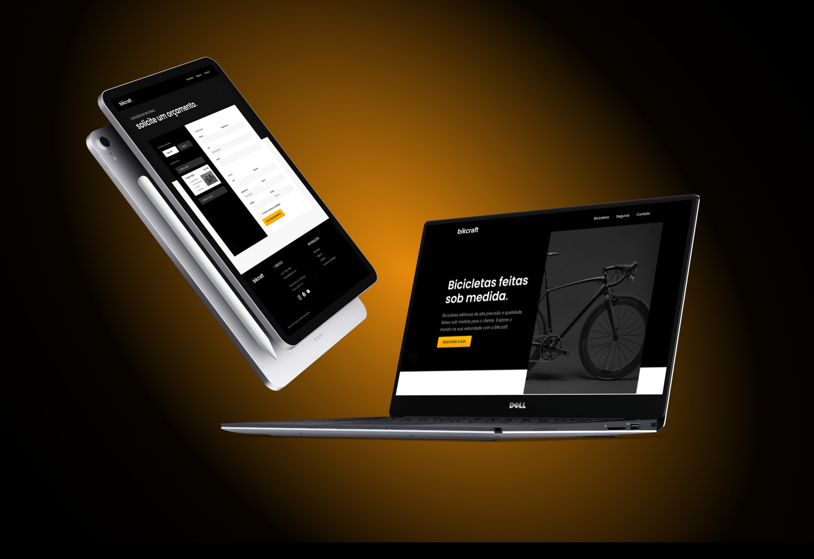
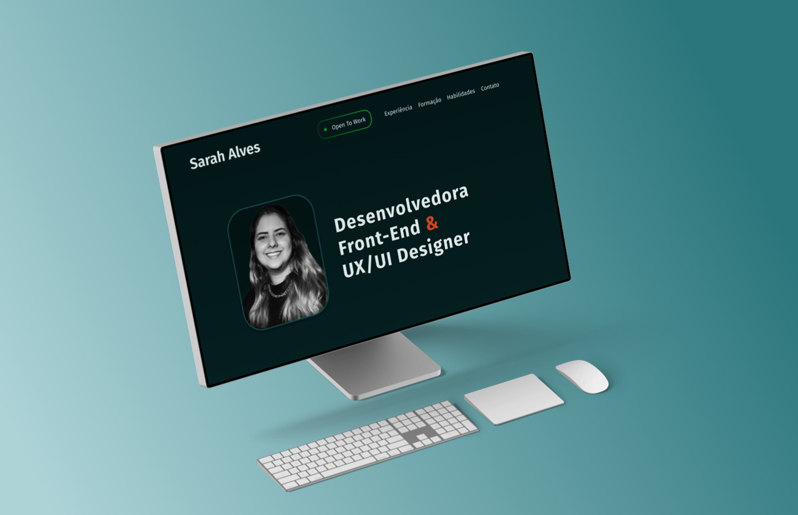
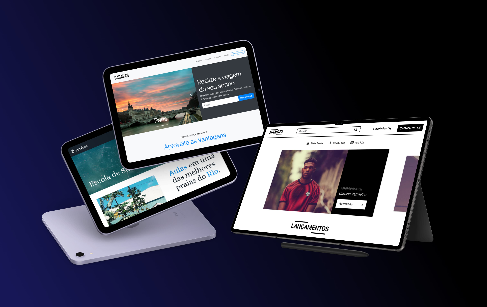
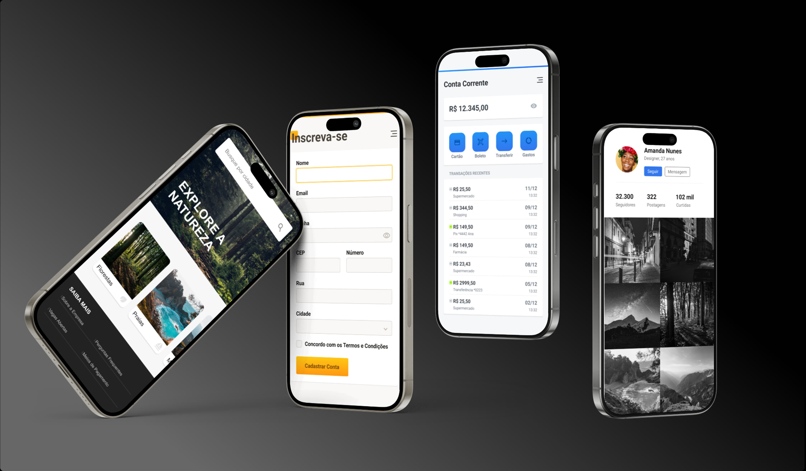
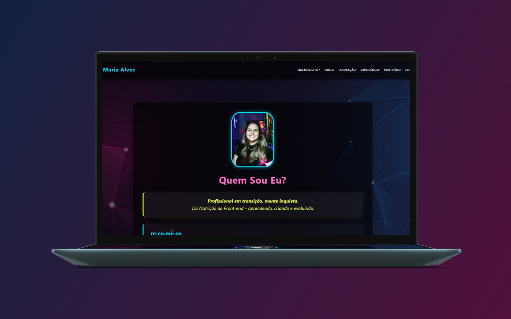

Portfólio

Dev Links
Esse projeto foi elaborado no curso de Especialização em Fundamentos da Programação da Rocketseat. O desafio foi criar uma página de link utilizando o protótipo no Figma e codificando em HTML, CSS e JavaScript.
SAIBA MAIS
Bikcraft | Bicicletas Elétricas
Este foi um projeto completo de UI Design + Desenvolvimento Web, parte do curso da Origamid. O desafio foi criar o site fictício Bikcraft, passando por todas as etapas: do protótipo no Figma à codificação com HTML e CSS.
SAIBA MAIS
Design Site Pessoal
Remodelagem de interface do meu primeiro projeto. Esse projeto foi desenvolvido no Figma, focando no design, na organização visual, na hierarquia das informações e na construção de uma identidade visual clara e objetiva
SAIBA MAISProtótipo Bikcraft
Protótipo final do curso de UI Design para Iniciantes da Origamid.Consiste na criação da interface visual do site fictício Bikcraft, com foco na experiência do usuário e em um design de interface moderno, responsivo e acessível.
SAIBA MAIS
Interface de Navegação
Recriação da interface de navegação, feita durante o curso de UI Design da Origamid, com base em informações reais de empresas, desenvolvendo a hierarquia e usabilidade em projetos digitais.
SAIBA MAIS
Interface Mobile
Este projeto foi desenvolvido como parte do curso de UI Design, com o objetivo de introduzir conceitos básicos de design de interfaces no Figma, focando na organização de layout, escolha de elementos visuais e construção de uma navegação simples.
SAIBA MAIS
Site Pessoal
Primeiro projeto pessoal, um currículo web, feito com HTML e CSS durante o curso da Fundação Getúlio Vargas, com foco em estruturação de páginas e estilização básica.
SAIBA MAIS